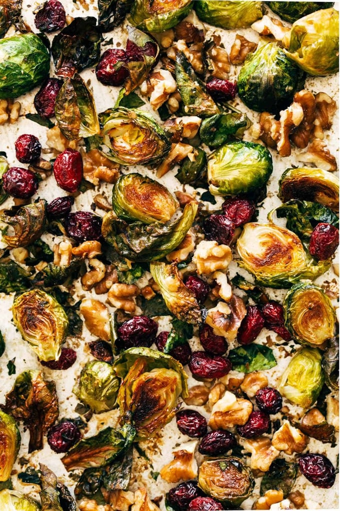

Roasted Brussels Sprouts
recipe courtesy of Pinch of Yum

Description
These House Favorite Brussels Sprouts are the best side veg and are speckled with bright bursts of cranberries and nutty walnuts. The perfect addition to any meal!
Ingredients
- one 12 oz. package raw Brussels sprouts, halved
- 2 tbsp olive oil
- a pinch of salt and pepper
- a handful of walnuts
- a handful of dried cranberries
- 1 tsp Dijon mustard
- 2 tbsp maple syrup
Steps
- Preheat the oven to 425 degrees. Place brussels sprouts cut-side down directly on a baking sheet. Drizzle with oil and sprinkle with salt and pepper.
- Roast brussels sprouts for 15-20 minutes, until cut sides are very brown and some of the leaves are crispy. Add walnuts, mustard, and maple; return to oven for 5-10 minutes to get the walnuts toasted. (You can choose to either add the sauce now, or when the pan comes out of the oven in step 3. If you add it now, it gets kind of baked into the brussels, but if you add it when they’re done baking, it’ll be a little more saucy. I like it both ways. Your choice!)
- Remove from oven. Toss with cranberries directly on the baking sheet. Season and serve immediately. Yumo!